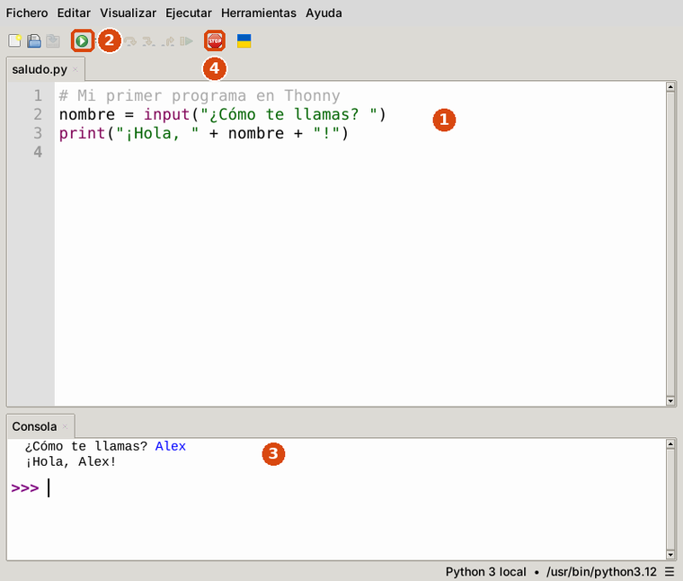
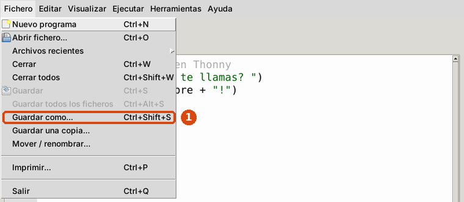

El mismo Python, en otro programa
La prueba práctica se hace sin internet, así que no podrás usar online-python.com. Programarás en Thonny, un programa instalado en los ordenadores del aula. El Python es el mismo: solo cambian los botones.
Las tres zonas de Thonny

Ampliar- El editor: aquí escribes el programa, igual que en online-python.com.
- Ejecutar: el botón verde con un triángulo (o la tecla F5). Funciona aunque no hayas guardado, pero entonces la pestaña dice
<sin nombre>y tu programa no está guardado en ningún sitio. - Consola: aquí sale lo que muestra el programa y aquí escribes tus respuestas a
input(), pulsando Enter. - STOP (el botón rojo): detiene un programa que no termina, por ejemplo un bucle infinito. En Thonny no hay página que recargar.
Puede que en tu ordenador Thonny tenga otros colores o algún botón más: las tres zonas son siempre las mismas.
Guardar cada ejercicio

Ampliar- Menú Fichero → Guardar como…
- Escribe el nombre que pide el enunciado (
ejercicio1.py) y pulsa Guardar. - Para el siguiente ejercicio: Fichero → Nuevo programa, y lo guardas con su nombre (
ejercicio2.py).
Thonny guarda de verdad en el ordenador: aunque lo cierres, el archivo sigue ahí. Al terminar la prueba el profesor te dirá cómo entregar los archivos.
Lo que cambia respecto al editor online
| online-python.com | Thonny | |
|---|---|---|
| Ejecutar | Botón verde Run | Botón verde con un triángulo o F5 |
| Dónde sale el resultado | TERMINAL | Consola |
| Guardar | Disquete → nombre → Download | Fichero → Guardar como… |
| Varios ejercicios | Pestañas y un ZIP | Un archivo por ejercicio |
| Internet | Hace falta | No hace falta |
Los mensajes de error son los mismos y se leen igual: número de línea, flechitas y última línea.
Cómo es la prueba práctica
Antes de empezar, que no te pille de sorpresa
- Son cuatro ejercicios cortos, de lo que has practicado en las tareas: pedir datos y hacer cuentas, un
if, unfory unwhileque va sumando. - Puedes tener delante la Chuleta de Python impresa, y nada más.
- Cada ejercicio va en su archivo:
ejercicio1.py,ejercicio2.py,ejercicio3.pyyejercicio4.py. - Un ejercicio que no funciona del todo también puntúa si la idea está bien: entrega siempre lo que tengas.
Para practicar tienes un ensayo de la prueba (PDF) con cuatro ejercicios del mismo tipo (un if, un for y un while que va sumando, entre ellos) y sus soluciones al final. Intenta cada uno antes de mirar la solución.